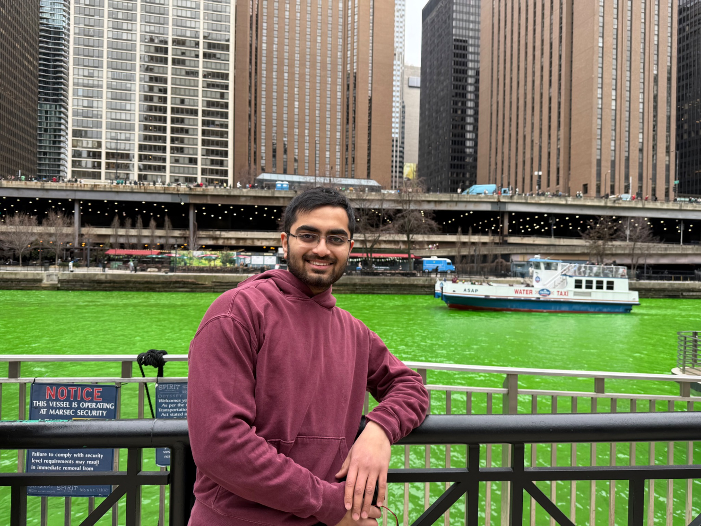

Our TlYbS₂ preprint is out.
Crystal growth, low temperature measurements, and many conversations became my first research paper as a co-author.
Read the preprint ↗Research in progress, ideas worth trying, and the moments that happen between experiments. A place to think out loud, one Friday night at a time.
Read the notes ↓Every Friday night — a fresh note from the lab, the classroom, or somewhere along the way.
Browse the archive ↗
Outside the lab · Chicago, 2026I’m a physicist learning to build in the world of semiconductor devices and circuits. Some weeks are about an experiment or a design problem. Others are about a new city, a conversation, or finding perspective away from the lab.
This is where I’ll share the process behind the milestones: what I’m learning, what surprised me, and what I’m still trying to understand.
Get to know me ↗A growing collection of ideas, experiments, and little discoveries. New writing will appear here as it’s published.
Until then, explore the moments that brought me here below.
Short updates from research and life. The Friday posts above will leave more room for the stories behind them.
Crystal growth, low temperature measurements, and many conversations became my first research paper as a co-author.
Read the preprint ↗I’m studying Semiconductor Engineering at Northeastern, bringing my physics background toward devices and circuits.
About my path ↗Four years in physics, a quantum information certificate, and research experiences that shaped the questions I want to ask next.
See my research ↗If something here sparks a thought, I’d love to hear from you.
Get in touch ↗